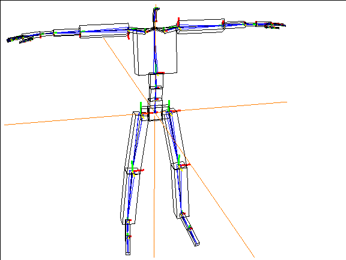
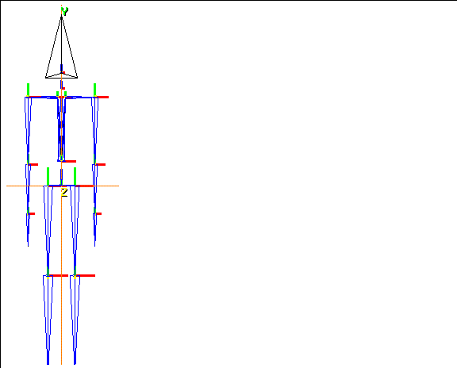

[N-World Contents] [Book Contents] [Prev] [Next] [Index]
Attaching Objects
This chapter describes techniques for using attached objects with skeletons to create realistic characters. You'll also learn how to attach entire object hierarchies to bones, collections of bones, or to an entire skeleton.
In this Chapter
You'll learn how to:
Attaching Objects to a Skeleton
So far, we've animated just a skeleton. However, the real power of the Skeletal Animation System is that skeletons can be used to animate attached objects or skins.
In this chapter, we'll discuss the first option, how to use attached objects with a skeleton.
Attached objects retain their shape regardless of how the bone to which they are attached moves or rotates-all points on the attached object "inherit" the transformation of the bone to which they are attached. Attached objects often have a "robotic" or "metallic" feel.
You might use the attached object approach for a robot, a tin man, or simply for attaching an object like a gun or sword to a character's hand.
You can also create a set of default objects on a skeleton with the Make Attached Objects command; these automatically generated objects can then be modified into a character!
Make Attached Objects
The Make Attached Objects command lets you attach a set of polyhedra to a skeleton. This is particularly useful for testing an animation without attaching objects by hand.
However, if you plan on using attached objects for your animation, it's also an easy way to get started-objects are attached to the correct bone, and can be modified to make a completely unique correction.
Try this:
1. Load the following skeleton:
/usr/local/ngc/demo/acclaim/acclaim_walk_man.asf
- The skeleton appears in the N-Geometry window.
2. (SHIFT-L) on the skeleton.
3. (CLICK-L) on Make Attached Objects.
- Individual polyhedra are created and attached to each bone on the skeleton. Your skeleton should now look something like this:

Figure 3.1 The Make Attached Objects command attaches polyhedra to each bone
- Note. If the Skeletal Animation System recognizes different bone names, it tries to make more appropriate objects (e.g., a head for a head bone.
In N-Geometry, the generated objects are automatically restructured into a top level object called Skeleton attached Objects, where Skeleton is the name of the skeleton to which the objects are attached. Individual polyhedra are subobjects and are named
Skeleton Bone.
Figure 3.2 Structure in N-Geometry for attached objects
Modifying Attached Objects
Once you've attached the objects, you could simply use the tools in N-Geometry to add complexity to the objects in order to create a character.
You can make any topological changes to the attached object. In Figure 3.3, we scaled some of the faces at different joint and pulled out some additional detail around the head to create something of our own:
Figure 3.3 You can modify the attached objects to create a unique character
Animating the Skeleton
Now, let's load a script that animates a character. You can substitute your object later if you want to, or simply follow along as we examine the script.
Load in the following script:
/usr/local/ngc/demo/scripts/dog-boy
You can substitute your skeleton and attached objects in the various channels, or simply animate those in the sample script.
4. (CLICK-L) on the Animate button to animate the script.
- Note that the objects now follow the motion of the various bones to which they were attached:

Figure 3.4 Animating the attached objects
5. (CLICK-R) on Playback.
6. (CLICK-L) on the File button of the N-Dynamics window.
- Use the Write Script and Objects command to save the script, the skeleton, and the skin. (This dialog box is described in more detail in the N-Dynamics Reference Guide.)
Attaching Your Own Objects to a Skeleton
The Make Attached Objects command creates a set of default objects for the selected skeleton; if you want to attach your own objects to a skeleton or a bone on a skeleton, you can follow the technique described in the tutorial below:
1. Load the following skeleton:
/usr/local/ngc/demo/biovision/WalkGoofy.bvh
2. (CLICK-L) on GeoMenus>Add New Object>Create>Tetrahedron.
- The tetrahedron appears at the global center.
3. Press "Z" so that you're looking at the skeleton directly along the Z axis.
- It should look like this:
Figure 3.5 Attaching an object
4. (CLICK-L) on bodies in the element sensitivity menu.
5. (SHIFT-L) on the tetrahedron.
6. (CLICK-L) on Axis Move, and select Y from the menu that appears.
7. Align the tetrahedron with the skeleton's head bone.
- It should look something like this:
Figure 3.6 Aligning the object
8. (CLICK-L) on faces in the sensitivity element menu.
9. (SHIFT-L) on the bottom face of the tetrahedron.
10. (CLICK-L) on Scale.
- Shrink the face so that it's an appropriate size for the skeleton's head. Something like this:

Figure 3.7 Scaling the bottom face of the head object
11. On the GeoMenus, (CLICK-R) on Local Axes in the Object Display menu, then (CLICK-L) on each object whose axes you want to see.
- Choose both the WalkGoofy (skeleton) and tetrahedron objects.
12. Note that a small XYZ appear near the global center.
- This indicates the location and orientation of the skeleton's local axes.
Figure 3.8 Displaying the local axes
13. (CLICK-L) on segments in the sensitivity element menu along the top of the 3D editor window.
14. (SHIFT-L) on the head bone of the skeleton.
15. (CLICK-L) on Attach Object.
16. Choose the object(s) you want to attach from the list that appears and (CLICK-L) on Do It.
- In this case, choose the tetrahedron. After you choose the object you want to attach, a dialog box appears:

Figure 3.9 Making the attached object's position its home position
17. (CLICK-L) on Yes.
- If you are planning on animating this skeleton and object, you should make this position the object's home position.
- This dialog box lets you optionally update the transformation matrix for the attached object:
- When you select Yes, note that the local axes for the attached tetrahedron are updated:

Figure 3.10 Reorigin and freeze updates a moved object's transformation matrix
18. (SHIFT-L) on the head bone.
19. (CLICK-R) on Rotate/Twist.
- As you move the head bone, the attached object (our rudimentary head) follows that motion:
Figure 3.11 The object follows the motion of the bone to which it is attached
20. Attach several additional objects to the skeleton.
- The topology of objects attached with the Attach Object command does not change. In this regard, objects attached using this method have a somewhat robotic appearance-they have a fixed volume, and don't bend or change shape at joints.
- When you're through, your character might look something like this:
Figure 3.12 A "skin" of attached objects, with skeleton visible and invisible
21. Restructure the objects into an object called "triangle-skin."
- Restructuring objects into a single composite object makes it easier to animate in a script. (Restructuring objects is described in the N-Geometry Reference Guide and in Getting Started, which shows how to restructure using the Browser.)
Animating the Character
To animate the character, you need to create a script in N-Dynamics. You can load a sample script to see how we animated the skeleton:
22. (CLICK-L) on File in N-Dynamics.
23. (CLICK-L) on Load Scripts.
- Read in the following script:
/usr/local/ngc/demo/scripts/triangle-head
- There are four channels in this script:
- You can substitute your skeleton and attached objects in the various channels, or simply animate those in the sample script.
24. (CLICK-L) on the Animate button to animate the script.
- Note that the objects now follow the motion of the various bones to which they were attached:
Figure 3.13 The attached objects follow the animated skeleton
25. (CLICK-R) on Playback.
26. (CLICK-L) on the File button of the N-Dynamics window.
- Use the Write Script and Objects command to save the script, the skeleton, and the skin. (This dialog box is described in more detail in the N-Dynamics Reference Guide.)
Positioning a Terminal Object to Attach
An object does not have to be located anywhere near the bone to which you want to attach it.
You might, for example, want to attach a halo-like object floating over your character's head:
Figure 3.14 An object in any location can be attached to any bone
If you want to attach objects, create the object, then position it by selecting the body in N-Geometry and positioning the body using any of the modify commands.
If you attached the torus in the example above to the head bone, it would follow the motion of that bone:

Figure 3.15 Objects can be any distance or orientation from the bone to which they are attached
Attaching a Hierarchy of Objects
Up to now we've discussed attaching a single object to a bone or skeleton, or making a set of default attached objects.
However, what if you have a group of objects that are restructured into an object?
Attaching a Hierarchy of Objects to a Single Bone
If you want to attach a hierarchy of objects to a bone, you can do that too. In this example, we'll show how to attach a gun, which has two subobjects, to a bone.
1. Create the object group.
- In this case, we created a gun group that had two subobjects, the gun itself, and the sight.
Figure 3.16 Create the object hierarchy
2. Put the skeleton in its base position.
3. (CLICK-L) on objects in the element sensitivity window and move the object to its new location.
Figure 3.17 Move the object hierarchy to its new location
4. (SHIFT-L) on the bone to which you want to attach the object.
5. (CLICK-L) on Attach.
6. In the object list that appears, (CLICK-L) on the group you want to attach to the bone.
- If your group contained two objects (e.g., gun and sight) that were restructured into gun Group, you'd select the gun Group object:
Figure 3.18 Selecting the object group
- The following dialog box is displayed:
Figure 3.19 Making the object's position it's home position
7. (CLICK-L) on Yes.
- You can now pose the skeleton with the object hierarchy attached
Figure 3.20 The attached object hierarchy follows the bone to which it is attached
Attaching a Hierarchy to a Collection of Bones
If you have already created an object hierarchy of objects that you want to attach to a skeleton, the Skeletal Animation System has a built in shortcut that lets you attach several objects at once. If you use this option (described below), objects are attached to the bone they are physically closest to in 3D space.
Try this:
1. Create a skeleton primitive.
2. Create several objects and position them near the bone you want them attached to.
- Your objects might look something like this:
Figure 3.21 Attaching an object hierarchy-position objects close to the bone that should drive them
3. Restructure the objects into a group using the browser or N-Geometry.
4. Collect the bones to which you want to attach the objects.
5. When the collection is complete, (SHIFT-L) on the collection and move the mouse over the Attach command.
- Now, if you read the mouse documentation line, you'll see that (CLICK-L) will attach terminal objects (those in the group) to the closest bone.
6. (CLICK-L) on Attach.
7. (CLICK-L) on the object group, then (CLICK-L) on Do It.
- As when attaching a single object, you're prompted to make the object's current position its home position:

Figure 3.22 Making the object's position it's home position
8. (CLICK-L) on Yes.
- The objects in the group are automatically attached to the bone they are nearest to:
Figure 3.23 Objects in the hierarchy are attached to the closest bone using this option
Attaching a Hierarchy to a Skeleton
Attaching an object hierarchy lets you perform either of the techniques described above. If you (SHIFT-L) on a skeleton, then move the mouse over the Attach command, you'll see that you can attach an object to the skeleton, or attach terminal objects in a complex object to the bones they are physically closest to.
Saving Your Work
When you've finished attaching your objects, you should save your work.
To save a skeleton with attached objects, simply save the attached object.
When you save an attached object, a reference to the skeleton it is attached to is also saved with the object.
- Note. If you read in multiple objects that reference the same skeleton, N-Geometry prevents multiple copies of the skeleton from being generated.
Because the reference to the skeleton is kept with the attached object, that means you can keep adding complexity to a skeleton that can be shared by many characters.
Making Attached Objects Visible in N-Dynamics
If you animate with attached objects, you must always include a Make Visible channel for those objects. The Update Skins? parameter in the Update Skeleton operation applies only to assigned skins, as described in the following chapter.
Congratulations!
You've now learned how to make a set of default attached objects, attach simple terminal objects to a bone or skeleton, and attach a hierarchy of objects to a bone, collection of bones, or a skeleton.
[N-World Contents] [Book Contents] [Prev] [Next] [Index]
 Another fine product from Nichimen documentation!
Another fine product from Nichimen documentation!
Copyright © 1996, Nichimen Graphics Corporation. All rights
reserved.